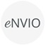

|
COLABORATORIO The global collaboration platform for science and research |
Welcome to Colaboratorio With a variety of tools that allow scientists and academics to share and promote knowledge, organise joint activities and communicate in real time, Colaboratorio is a secure and private environment that optimizes time and effort. If you are not registered, you may use the OpenIdP here. |
| Services in Colaboratorio: | |||||
|  | |||||
Thanks to the ELCIRA and MAGIC Projects the Colaboratorio platform, created by RedCLARA, has evolved into a cloud service that can be incorporated in the websites of the national networks. Thus today the service is used by the NRENs of Ecuador (CEDIA), Colombia (Renata) and Costa Rica (CONARE) in Latin America, in the regional network in the Caribbean (C@ribNET) and in the one of East and Central Africa (WACREN). Additionally, it is in the process of being adopted by the networks of the Middle East (ASREN) and South Africa (SANReN). To date Colaboratorio hosts around 300 communities and has more than 5,000 registered users from around the world who have the possibility to access and be part of the discussions of current events and communities, create and participate in web conferencing, transfer large files, apply for funding opportunities for project development, meeting partners and collaborators for research projects and to get information about events of interest at global level. |
For more information,
please download the
Colaboratorio User's Guide:
|
This development is possible thanks to the MAGIC Project, which is funded by the European Commission. |
|